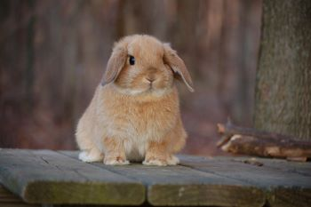

Blue Eyed White Doe
Available! | Cost: $150
Mom: Frosty x Dad: Yeti | Age: Two months old
A adorable, sweet tempered bunny. She prefers her adults to go to quiet homes with older children or adults only. She doesn’t mind dogs or cats and she will need to be spayed.

Dark Eyed Orange Doe
Available! | Cost: $160
Mom: Frankie x Dad: Chester | Age: Four months old
This doe requires a lot of space to run around! She is a very active and upbeat bun that enjoys chew toys. Since she is quite the wild spirit, but doesn't mind children and other pets.
Dark Eyed Grey Buck
Available! | Cost: $150
Mom: Brie x Dad: Chandler | Age: Three months old
This buck would adjust well to a faster paced home with kids or relaxing on the floor in an adult household. He loves treats a lot and also likes running really fast in a playpen. He has a really cute personality and I’m sad to see him go!

Dark Eyed Embre Cream/Brown Buck
Available! | Cost: $175
Mom: Claire x Dad: Brownie | Age: Three months old
A kind, adorable buck that enjoys sunbathing. Even though he's quite the quick runner, he enjoys laying down and watching TV. He gets along very well with cats and dogs, but prefers to just be around children and adults only.